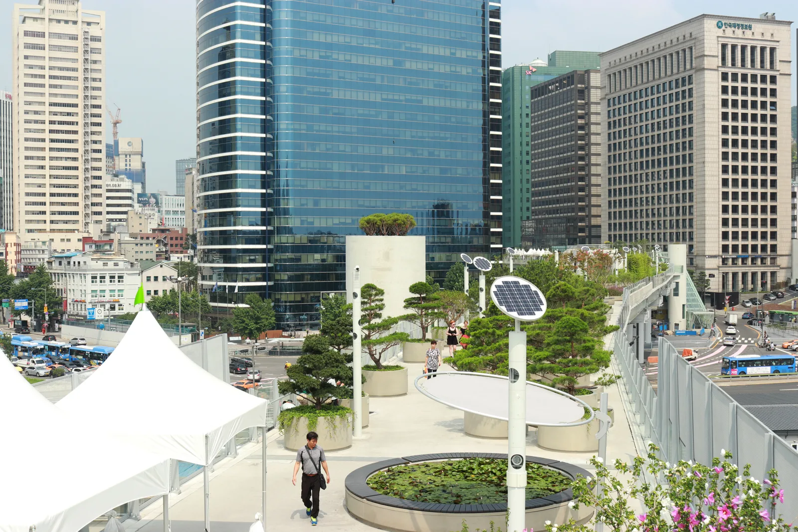
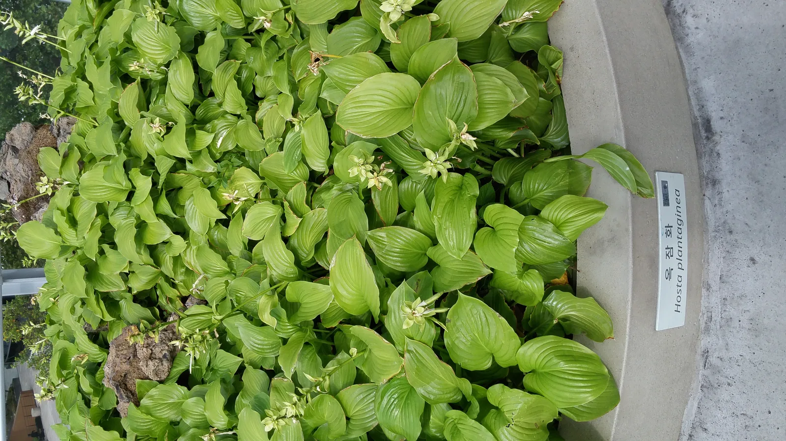
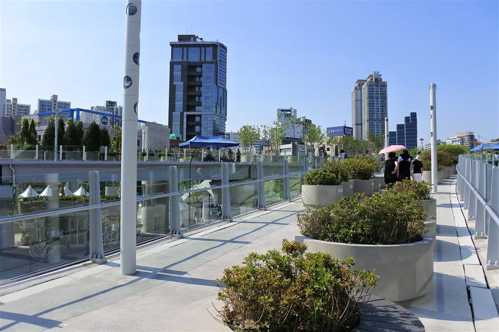
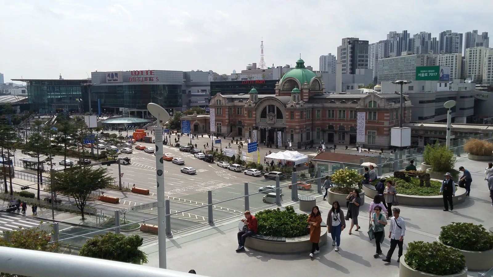
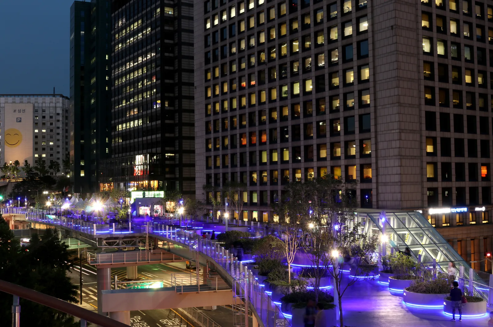
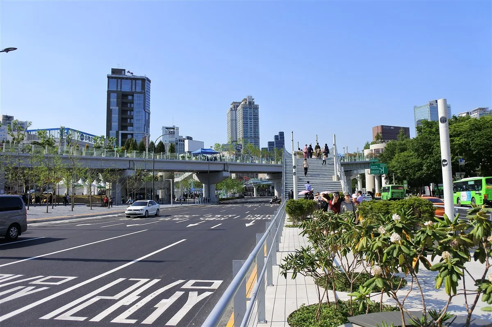
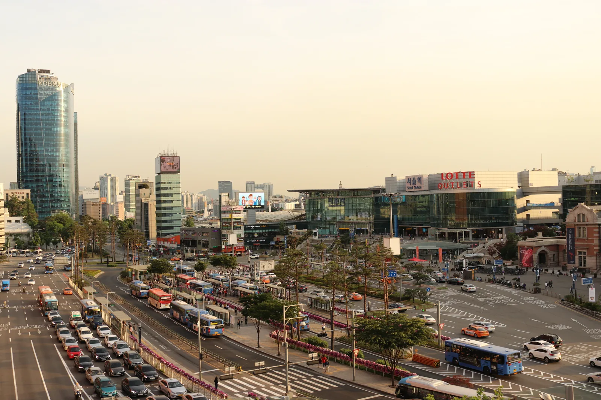

▲ 645개의 원형 화분이 늘어선 서울로7017 보행로. 이번 가을에는 이 화분들 사이로 국화 674본이 새로 심어졌다 사진=Wikimedia Commons (분당선M, CC BY-SA 3.0)
1. 서울로7017, 국화 674본으로 가을 단장
서울시는 9월 15일부터 18일까지 나흘간 서울로7017에 국화 674본을 새로 심었다고 밝혔다. 이용객이 많은 점심시간대에 맞춰 거리공연도 함께 진행하며, 계절감을 살린 산책로로 새단장했다. 서울로7017은 회현역 인근부터 식물들이 가나다순으로 배치돼 있으며, 50과 306종의 식물이 식재돼 있다. 서울시와 25개 자치구를 상징하는 나무와 꽃도 곳곳에 함께 심어져 있다.

▲ 서울로7017 화분에 심긴 식물들. 가을을 맞아 이 화분들 사이로 국화가 새로 더해졌다 사진=Wikimedia Commons (Christian Bolz, CC BY-SA 4.0)
2. 10월 23일 '구석구석 라이브' — 장미무대에서 만나는 클래식·플라멩코
10월 23일 낮 12시, 서울로7017의 장미무대에서 '구석구석 라이브' 공연이 열린다. 앞서 9월 11일에는 기타리스트 김유정이 클래식과 플라멩코를 바탕으로 한 연주를 선보인 바 있다. 점심시간에 짧게 즐길 수 있는 버스킹 형태로 진행돼, 인근 직장인과 산책객들이 부담 없이 들를 수 있다.

▲ 서울로7017의 장미테라스 인근 산책로. 이 일대 장미무대에서 점심 공연이 열린다 사진=Wikimedia Commons (Keneckert, CC BY-SA 4.0)
공연 외에도 수국카페와 장미쉼터에서는 매주 금요일 오후 1시부터 5시까지 뜨개질 공방·카페가 운영된다. 사전 신청 없이 현장에서 참여할 수 있고, 전문 강사에게 무료로 뜨개질을 배울 수 있어 가벼운 나들이 코스로도 알려져 있다.
3. 서울역 고가가 걷는 정원이 되기까지
서울로7017은 1970년에 놓인 서울역 고가차도를 2017년 5월 20일 보행자 전용길로 개조해 개장한 공중 정원이다. '1970년 고가가 2017년 17개의 보행로로 다시 태어난다'는 뜻을 담아 이름을 지었다. 총연장 1,024m(약 1km) 구간에 원형 콘크리트 화분 645개가 줄지어 배치돼 있고, 그 안에 50과 306종의 식물이 자란다. 걷는 사람 입장에서는 단순한 산책로가 아니라, 계절마다 표정이 바뀌는 '살아있는 식물원'에 가깝다.

▲ 서울역 고가차도를 개조해 만든 서울로7017 전경. 도심 빌딩 사이를 가로지르는 공중 산책로다 사진=Wikimedia Commons (Christian Bolz, CC BY-SA 4.0)
4. 낮과는 다른 얼굴 — 서울로7017의 야경
서울로7017은 밤에 오르면 낮과 전혀 다른 풍경을 보여준다. 남산 쪽에서 내려다보면 보랏빛 조명을 받은 서울로7017이 도심 야경 속에 떠 있는 듯한 모습을 볼 수 있고, 길 위에서는 서울역 환승센터와 숭례문 야경, 서울스퀘어 미디어 파사드를 함께 조망할 수 있다. 서울시가 소개하는 '야행 코스'도 이 구간을 따라 걷도록 짜여 있어, 저녁 산책 삼아 들르는 시민들이 많다.

▲ 조명이 켜진 서울로7017의 밤 풍경. 서울역 일대 야경과 함께 볼 수 있다 사진=Wikimedia Commons (분당선M, CC BY-SA 3.0)
5. 자차로 갈 경우 — 접근과 주차
서울로7017은 서울역 바로 옆에 있어 대중교통 접근이 가장 편리하지만, 자차로 방문할 경우 서울역 인근 상업시설 주차장을 거쳐 진입하는 방법이 있다. 서울역 롯데마트 옥상정원(서울로7017과 연결된 공중 정원)은 롯데마트 주차장을 통해 오를 수 있어, 차를 세운 뒤 바로 서울로7017 서쪽 구간으로 이어 걸을 수 있다. 이 외에 서울역 광장 주변 공영주차장을 이용하는 방법도 있으며, 정확한 요금과 잔여 공간은 서울특별시 주차정보안내시스템(parking.seoul.go.kr)에서 미리 확인하는 것이 좋다. 롯데마트 서울역점 주차장은 연중무휴 24시간 운영되고 층별로 요금 체계가 다르게 적용되니, 방문 전 매장 안내를 참고하는 편이 낫다.

▲ 서울로7017 서쪽 진입로. 서울역 롯데마트 옥상정원과 이어지는 구간이다 사진=Wikimedia Commons (Keneckert, CC BY-SA 4.0)

▲ 서울로7017에서 내려다본 서울역 일대. 서울역과 바로 붙어 있어 접근이 쉽다 사진=Wikimedia Commons (분당선M, CC BY-SA 3.0)
📍 방문 전 확인할 것
국화는 9월 중순 식재 직후보다 이후 몇 주간 만개 상태를 유지하는 경우가 많으니, 방문 전 서울시 공식 채널에서 개화 상황을 확인하는 편이 낫다. 구석구석 라이브는 낮 12시 시작으로 짧게 진행되니 점심시간에 맞춰 방문하는 게 좋다.
6. 반나절 산책 코스로 정리하면
서울역 도착 후 서쪽 진입로로 서울로7017에 올라, 화분 사이 국화를 구경하며 동쪽으로 걷는다. 장미무대·장미테라스 인근에서는 공연 일정을 확인해보고, 여유가 있다면 수국카페에서 뜨개질 체험도 해볼 만하다. 해가 진 뒤라면 같은 구간을 한 번 더 걸으며 야경까지 챙기는 것도 방법이다. 국화와 공연, 야경까지 한 번에 묶이는 가을 코스다.
▲ 화분 사이를 걷는 시민들. 서울로7017은 걷는 것 자체가 식물원을 산책하는 경험이 되도록 설계됐다 사진=Wikimedia Commons (분당선M, CC BY-SA 3.0)
✅ 출발 전 확인할 것
· 국화 개화 상태와 구석구석 라이브 일정은 서울시 공식 채널에서 최종 확인
· 자차 방문 시 서울역 롯데마트 주차장 또는 인근 공영주차장 이용
· 뜨개질 공방은 매주 금요일 오후 1시~5시, 사전 신청 불필요
· 야간 방문 시 계단 구간이 있으니 편한 신발 권장